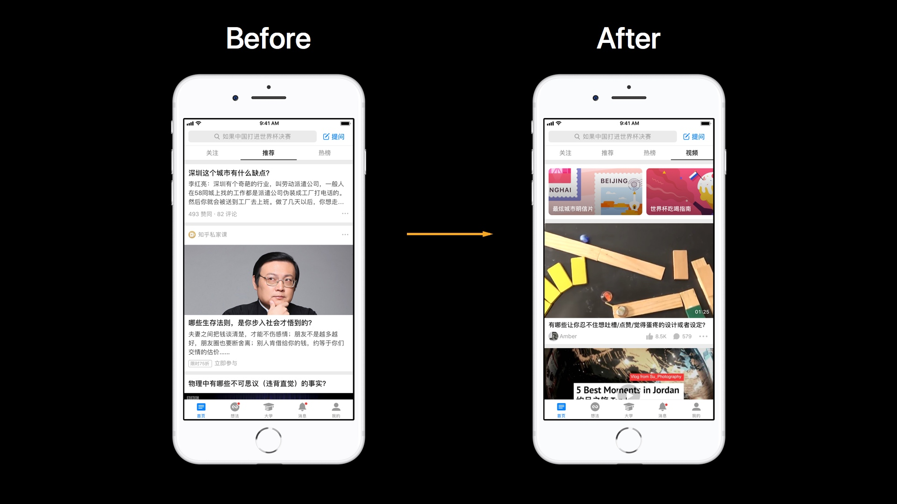
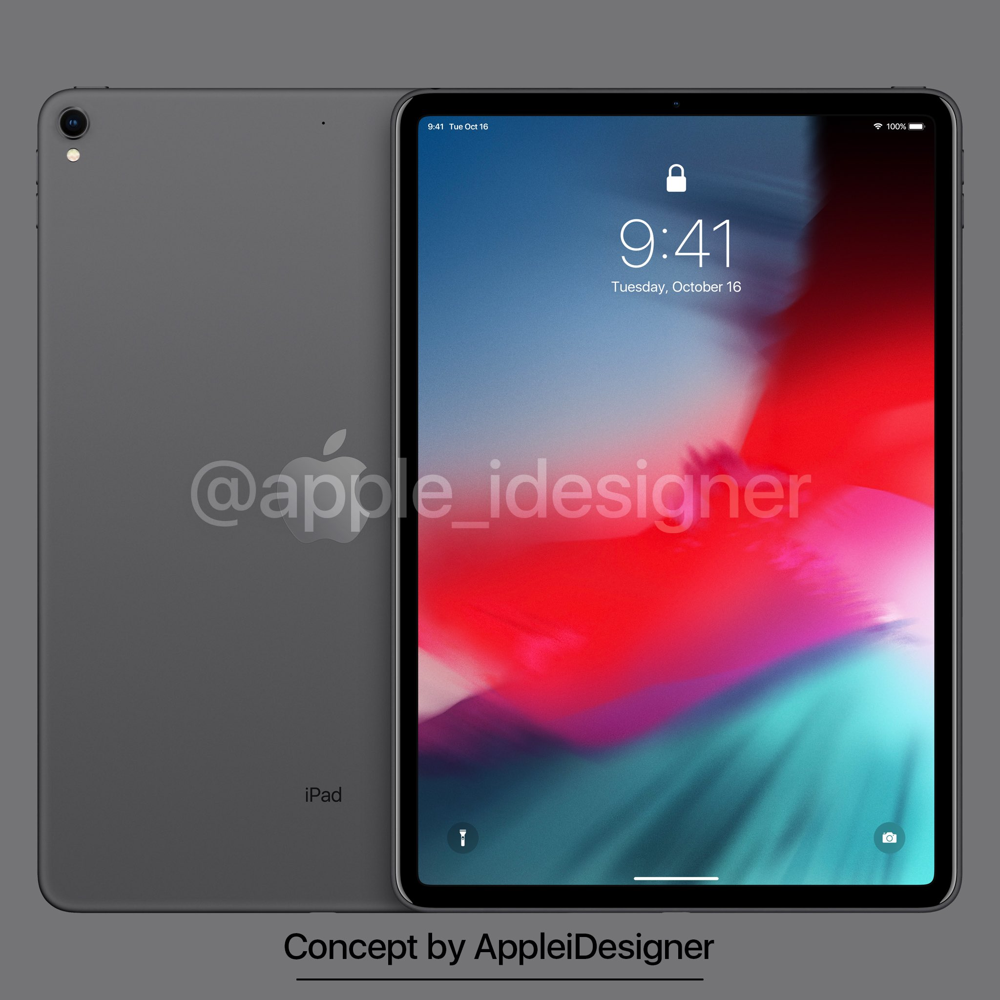

日本的退休养老制度
- 今天在微博上无意中了解到了日本的退休养老制度，引起我关注的几个核心内容如下，具体不展开：
- 以前，日本人退休后领取养老金的年龄是 60 岁，但随着日本老龄化严重、劳动力短缺问题越来越明显，政府不得不推迟领取养老金的年龄，但并不是一刀切；
- 你可以选择在 60-70 岁之间的某个年龄开始领取养老金。以 65 岁为分界线，选择小于 65 岁时，则每提前一个月，每月领取额减少 0.5%；选择大于 65 岁时，则每延迟一个月，每月领取额增加 0.7%。以后可能会进一步实施的是，如果选择 70 岁以后开始领取，每月领取额的增额率进一步提高；
- 总结一下就是根本上还是通过提高开始领取养老金的年龄（推荐 65 岁之后开始领取）来促进老年劳动力就业、减缓养老金开支，但实施的更加柔和，更能让人接受。在不得不推迟开始领取的年龄的前提下，我也更倾向于这种方式，毕竟自己有的选，大不了早领少拿点钱。
- 对比下中国目前的养老保险制度，几个要点如下：
- 现行退休年龄是男性达到 60 岁，女性达到 55 岁，目前的计划是从某个时间点开始，女性退休年龄每 3 年延迟 1 岁，男性退休年龄每 6 年延迟 1 岁，直至同时达到 65 岁。虽然退休年龄从整体上是渐变的，但对于一个已经确定了出生年月的个体来说，根据政策退休年龄是完全确定的。
- 领取养老金必须符合两个条件：1.达到上述的法定退休年龄；2.累积缴纳养老保险大于等于 15 年。如果符合条件，退休后领取的养老金数额将会根据你之前缴纳的金额、届时当地的平均工资水平、平均寿命都因素来计算。
- 我国目前养老金存在的一个问题：个人缴纳部分未坐实，即每个人个人缴纳的养老保险理应像银行存款一样是不能动的，有多少就是多少，但是现状是部分数额被用来弥补现状发放养老金的缺口，即「拆东墙补西墙」，但「东墙」终究还是要补的，就看怎么补了。
- 随着社会经济的发展，人民的生活水平在提高，人的寿命也在增长，像日本一样，中国的老龄化问题也会越来越严重，养老退休制度如何改革确实是一个迫在眉睫需要解决的问题。但回过头来，这种用现代打工者缴的钱养上一代老人的养老保险制度，真的合理吗？
随着我的博客的日趋完善，我渐渐意识到一个问题：每天的所见所闻所想，并不是都能或者说都需要通过一篇文章来记录，那样显得很重。因为各种事情、各种产品所引发的深入思考可能三言两语就可以讲完，但这些仍然值得被记录、被沉淀、被回溯。所以我想利用这个博客已有的功能创建一个新的分类「Talk」，并建立一个全新的栏目称为「Allen 说：」（目前暂定的名字），用以记录那些短小且值得分享出来的闪念。
三言两语的思考可以很多，但这不能成为充斥一个以文章为主的博客的理由，我不想这里变成我的第二个「微博」。所以所有的「Allen 说」都会按照时间倒序汇总在这篇文章里，当有新的「Allen 说：」发布时，会置顶在博客首页，点击也可以进入查看所有过去的「Allen 说：」。
不管是文章，还是闪念，一切的目的还是会如同这个博客的主题一样：搞懂逻辑、理清思路、沉淀想法、纪录生活。
2018 年
6 月
6/29
日本的退休养老制度
- 今天在微博上无意中了解到了日本的退休养老制度，引起我关注的几个核心内容如下，具体不展开：
- 以前，日本人退休后领取养老金的年龄是 60 岁，但随着日本老龄化严重、劳动力短缺问题越来越明显，政府不得不推迟领取养老金的年龄，但并不是一刀切；
- 你可以选择在 60-70 岁之间的某个年龄开始领取养老金。以 65 岁为分界线，选择小于 65 岁时，则每提前一个月，每月领取额减少 0.5%；选择大于 65 岁时，则每延迟一个月，每月领取额增加 0.7%。以后可能会进一步实施的是，如果选择 70 岁以后开始领取，每月领取额的增额率进一步提高；
- 总结一下就是根本上还是通过提高开始领取养老金的年龄（推荐 65 岁之后开始领取）来促进老年劳动力就业、减缓养老金开支，但实施的更加柔和，更能让人接受。在不得不推迟开始领取的年龄的前提下，我也更倾向于这种方式，毕竟自己有的选，大不了早领少拿点钱。
- 对比下中国目前的养老保险制度，几个要点如下：
- 现行退休年龄是男性达到 60 岁，女性达到 55 岁，目前的计划是从某个时间点开始，女性退休年龄每 3 年延迟 1 岁，男性退休年龄每 6 年延迟 1 岁，直至同时达到 65 岁。虽然退休年龄从整体上是渐变的，但对于一个已经确定了出生年月的个体来说，根据政策退休年龄是完全确定的。
- 领取养老金必须符合两个条件：1.达到上述的法定退休年龄；2.累积缴纳养老保险大于等于 15 年。如果符合条件，退休后领取的养老金数额将会根据你之前缴纳的金额、届时当地的平均工资水平、平均寿命都因素来计算。
- 我国目前养老金存在的一个问题：个人缴纳部分未坐实，即每个人个人缴纳的养老保险理应像银行存款一样是不能动的，有多少就是多少，但是现状是部分数额被用来弥补现状发放养老金的缺口，即「拆东墙补西墙」，但「东墙」终究还是要补的，就看怎么补了。
- 随着社会经济的发展，人民的生活水平在提高，人的寿命也在增长，像日本一样，中国的老龄化问题也会越来越严重，养老退休制度如何改革确实是一个迫在眉睫需要解决的问题。但回过头来，这种用现代打工者缴的钱养上一代老人的养老保险制度，真的合理吗？
6/25：
「Night Mode/夜间模式」还是「Dark Mode/暗色模式」？
macOS Mojave 中关于「暗色模式」的介绍↗
macOS Human Interface Guidelines 中关于「Dark Mode」的描述↗
- WWDC 18 中 Apple 发布了 Dark Mode for macOS，在 macOS Mojave 的中文介绍页面里翻译成了「暗色模式」而不是我们经常提到的「夜间模式」。关于「Night Mode/夜间模式」还是「Dark Mode/暗色模式」我有一些自己的思考。
- 我的理解是 Apple 一直认为将 app 的背景色调成黑色/暗色的目的并不是让用户在晚上或者光线暗的时候去使用它，而是在这种「暗色模式」下，核心内容像文章的内容、列表上的文字、画布上的设计这些能够更加突显出来，而像菜单、工具栏会不那么显眼。用户可以更专注在这些核心内容上。所以称之为「Dark Mode/暗色模式」而不是「Night Mode/夜间模式」。
- macOS HIG 里讲 Dark Mode 的第一条也提到「Focus on your content」，第二条中更提到「Dark Mode is an aesthetic choice for users.Users … may use it at any time of day or in any lighting conditions.」。
- 一直以来在 iOS 上的暗色或者说夜间模式呼声很高，但在 WWDC18 上 Apple 只发布了 macOS 的暗色模式，我认为可能是更需要长时间专注生产力工作的 macOS 平台更应该有以专注核心内容为目的的暗色模式。
- 而 iOS 平台也有 iPad Pro 这种往生产力工作方向走的硬件设备，根据 Apple 这几年新软件/硬件功能或技术的发布规律来看，或许 WWDC19 就能见到 Dark Mode for iOS 13。
- 对于在晚上或者光线暗的时候操作设备比较刺眼甚至影响睡眠的问题，Apple 或许已经给出了他的答案——之前在 iOS 和 macOS 平台都已推出的「Night Shift/夜览」功能。
- 当前，很多 app（特别是一些国产阅读类 app）喜欢跟风做出一个夜间模式的功能，很多都是一些换个背景的表面功夫，我很怀疑他们是否真的想明白了这个模式的目的和效果？
6/21:
越来越臃肿的知乎
- 我在很早期的时候（可能那时候很多非互联网从业者/爱好者还不知道知乎的存在）就成为了知乎的用户，那时候知乎的用户量还很小，整个社区的氛围很友好，回答问题的人写的基本都是干货，我也乐于花时间在知乎里到处探索自己感兴趣的话题。
- 随着后来知乎被越来越多人知晓，知乎渐渐地从一个小众产品变成了一个大众产品，自然而然也有了更多需要落地的商业诉求，知乎涉及的领域逐渐扩大以至于变成现在这个在我看来十分「臃肿」的知乎。
- 之前由于工作的需要，对知乎 app 现在的信息架构仔细梳理了一下，惊异于一个小小的 app 里包含如此复杂众多的内容和结构，内容方面除了包括最早的问题回答，还包括「文章」/「专栏」、社交属性的「想法」、知识付费领域的「Live 小讲」/「私家课」/「书店」/「会员课堂」/「读书会」等等，功能方面自然还有由内容引申出的「消息」、「我的/个人主页」、「设置」等，更不用说由内容引申出的多维度推荐、搜索、私信等。这一切全部塞在这一个 app 里，不免让人觉得有点喘不动气。
- 而伴随着用户越来越多，用户的背景也越来越复杂，知乎中推荐的内容渐渐地被抖机灵的段子、消磨时间的泛娱乐化话题、看完哈哈一笑转头就忘了的各种湿货所占领，而好的回答/干货也被雪藏，乐于分享干货的人也在变少。现在如果不是因为想探索的话题恰好在知乎被搜索到，我不再会像以前一样打开知乎探索点什么未知的东西。
- 知乎早期的 Slogan 是「与世界分享你的知识、经验、见解」，现在的 Slogan 是「发现更大的世界」。由重在分享向重在发现的转变，由知识、经验、见解向更大范围内容的转变，知乎的发展定位由此也可见一斑。
非常戏剧化的是，今天知乎更新了新版本，又又又又增加了新的内容功能——一个视频 tab，把回答和文章里的视频单独拎了出来，看来又看上了最近逐渐火热的短视频市场。我在微博中吐槽道「有种反正已经复杂的像个怪胎索性放弃治疗的感觉，眼睁睁的看着知乎从一个清新脱俗的小孩子变成了一个失去底线的老流氓。」😔
产品做加法很简单，做减法很难，不仅在于怎么做，更在于敢不敢。受国内大环境的一部分影响，国产 app 可能都像知乎一样，因为商业诉求而不得不变得越来越庞大/复杂、核心跑偏，真的就没有办法做一个既获利，又克制的回归本源、真正重视用户体验的产品吗？
6/13:
Apple 这些年新功能、新硬件的发布节奏
- WWDC 18 中 Dark Mode 这个功能只在 macOS 平台中出现，Screen Time 这个功能只在 iOS 平台中出现，这俩功能什么时候会对应出现在 iOS、macOS 平台中呢？下面是根据这些年 Apple 发布的一个规律所得出的猜测：
- 过去已知🧐：
- 2013 年 iOS 扁平化→2014 年 macOS 扁平化；
- 2017 年改版 iOS App Store→2018 年改版 Mac App Store；
- 2015 年 3 月发布配备了 Force Touch 的 MacBook Pro→2015 年 4 月发布配备了 Force Touch 的第一代 Apple Watch→2015 年 9 月发布配备了 3D Touch 功能的 iPhone 6s
- 2016 年发布配备了 True Tone 技术的 iPad Pro→2017 年发布配备了 True Tone 技术的 iPhone 8、iPhone X；
- 未来预测🤔：
- 2018 年 Dark Mode for macOS 10.14→2019 年 Dark Mode for iOS 13？
- 2018 年 Screen Time for iOS 12→2019 年 Screen Time for macOS 10.15？
- 2017 年发布了配备最高支持 120Hz 屏幕刷新率的 iPad Pro→2018 年发布配备最高支持 120Hz 屏幕刷新率的 iPhone？
- 2017 年发布了配备 Face ID 的 iPhone X→2018 年发布配备 Face ID 的 iPad Pro？→2019 年发布配备 Face ID 的 MacBook Pro？
- 一切静待时间的验证吧。
6/5:
由 iOS 12 Developer Beta 预测未来的 iPad Pro
在 iOS 12 Developer Beta 1 中，iPad Pro Face ID 的录入界面被曝光&状态栏上的时间由中间移到了屏幕最左侧↗
- 刘海屏的 iPad Pro 是一种可能性，但 iPad 更应该讲究握持感，而且「刘海」是一个因为技术所限不得不有的产物，终究有一天我们还是希望干掉刘海，如果现在能够在 iPad 上去掉刘海当然就没有必要留着了。
- 所以秋季要发布的新 iPad Pro 会不会是没有刘海、但配备 Face ID 的极窄边框的形式？将时间放在了左侧说不定只是为了和 iPhone 端的 iOS 统一交互🤔
- 在 iOS 11 中增加了很多专门为 iPad 设计的一些功能交互，而 iPhone X 的刘海屏幕也使得 iOS 11 for iPhone X 的交互与其他机型产生了很大的不同。Apple 作为一家特别注重全平台交互功能一致性（Consistency）的公司，在经过几次因为发展不得不有的交互不统一的阵痛后，统一各个平台、机型的交互也是当务之急。
- 近期，AppleiDesigner 发布的一组全面屏 iPad Pro 的渲染图或许也印证了上面的猜测。 
- 7/2 Update:对于新一代 iPad 和 Face ID 的结合目前也有争议，毕竟 iPad 的使用习惯不会完全与 iPhone 使用时需要正对屏幕一样，因此可能会导致 Face ID 在 iPad 上的应用有那么一些不方便。由此产生一个猜想：或许今年新机型配备的 Face ID 更加先进，能够正对识别，又可斜着、侧着、横屏下识别？可能说不定有惊喜？也可能是我想多了，技术还没有发展那么快？🤨
2017 年
11 月
11/17：
我眼中的优秀程序猿
- 在两份工作中我见过各型各色的程序猿，每个人的性格都不会一样，但随着各种项目的合作与配合，我发现在我的心中会逐渐形成一把衡量优秀的程序猿的尺子。与优秀的程序猿一起工作是一件十分舒服的事情。关于我眼中的优秀程序猿，我总结了下面几点：
- 不需要有足够多的开发知识储备，但需要有足够开阔的视野，这点十分重要；
- 对行业的新技术、新方法十分敏感，乐于尝试，善于学习；
- 以结果为导向，对结果有足够的责任心；
- 善于利用已有的工具、灵活的解决办法去解决问题，不死板；
- 不错的沟通能力，有一定的技术洁癖；
- 考虑问题有全局观念，甚至能够站在开发的角度先想一步。
产品汪与程序猿的关系
- 时常会在网络上看到产品与开发间的相互吐槽，产品认为开发做出来的东西与自己期望值相差甚远，开发认为产品定的需求可笑离谱，甚至出现过「因产品经理不断提出新的不合理需求，工程师一怒之下捅死了产品经理」的段子/新闻。不管这些是真是假，是戏谑还是自嘲，都能看出互联网界产品汪与程序猿之间似乎有着天生的不可化解的敌意。
- 问题的关键还是在于「沟通」，产品经理没有足够有理有据地说明那样做的背景和原因，开发关注的点更多地在于程序上是如何实现的而不是实现后的产品的细枝末节，产品和开发都没能站在对方的角度去换位思考一下，做不到相互理解、深入沟通，只能激化矛盾，变得互不信任，形成恶性循环。
- 实际操作中，我自己是十分希望产品汪能够与程序猿一起愉快的玩耍的，并在工作中努力达成这个目标。一方面能根据每个程序猿的不同性格与其进行沟通，重点关注为什么会出现问题而不是出了什么问题，既要治标又要治本，以在之后的工作中避免同类问题；另一方面作为产品汪，虽然不是专业写代码的但我会十分乐意去了解代码背后的逻辑与原理，去了解产品背后更大的世界，这既有利于与程序猿之间的沟通，又能在确定需求时更加合理全面。
- 说白了，都是在一个窝里混口饭吃的，何必弄得相互不开心呢🤪？
11/15：
Apple 的创新与勇气
「iPhone X 消费者报告」From @爱否科技↗
「iPhone 8 Plus消费者报告」From @爱否科技↗
- 一千个人眼中有一千个哈姆雷特，每一家媒体也会从自己的角度把对 iPhone X 的看法呈现给观众。看多了大众媒体对 iPhone X 抓住一个点就不放的浅显吐槽，甚至是为了搏大众眼球的水货文章，我们也应该静下心来去了解下产品背后的故事。
- 这两个视频的尾声说的很好，Apple 之所以是 Apple，是因为 Apple 总是能从人性的角度出发去提前发现用户的需求并满足它，苛求极致并做到尽善尽美，不是堆叠处理器的参数而是使用不同的专用处理器去契合用户的不同使用场景，不是强调相机有多高的像素而是努力做到拍出的照片如同人眼看到的一模一样，不单单是想让用户通过拍照留住美好瞬间的 picture 而是想更多地留住这一瞬间的 moment；Apple 亦敢于顶住压力、拿出「Courage」去砍掉光驱、砍掉网口、砍掉 USB 接口、砍掉耳机接孔、用上 Touch ID、用上 Face ID，在产品上用上你想不到的创新。不敢说 Apple 百年不倒，但至少现在，Apple 值得我去学习和喜爱。
共享单车
- 今年 3 月 16 日我第一次使用小蓝单车，相比摩拜和 ofo，小蓝单车简直不能更好骑。在共享单车百家争鸣，试图通过各种红包优惠、月卡促销抢占用户的情况下，我曾一度在想用车时宁愿选择花钱的小蓝，也不愿选择免费的摩拜和 ofo。无奈小蓝还是输了，输给了入场速度，输给了融资困难，市场就是如此残酷😞
- 去年 9 月 16 日我第一次使用共享单车-摩拜，对于接受新鲜事物很快的我来说，很期待共享单车能对我的生活做出一些改变，而那个时候也是共享单车刚刚进入市场的时候。一年的时间，共享单车确实在方便我的生活，但各家公司的野蛮发展是以牺牲城市整洁度为代价的，各种共享单车像蝗虫一样堆满了各城市主干道、各地铁站周边的道路，北京这座本身建设就不咋样的城市更是被摧残的惨不忍睹。抛开公司对单车的运营管理不足、公司为了抢占市场不择手段、政府出手监管不及时、政府监管仍在摸索不够完善这些因素，共享单车是否也是人的基本素质的照妖镜？每一次用车、每一次停车、每一次骑车穿行在繁忙的十字路口，我们每一个人是不是也应该对共享单车现在的乱象负点责？
- 2018/04/19 Update：今天发现小蓝单车挂上了滴滴的牌子又重新出现了在北京的街头，因为之前对小蓝的喜爱而略感到一丝欣慰，希望以后能去更多城市吧。
11/14：
产品设计的抉择
- 手里的广发信用卡进账了一笔一万块的退款，这卡本身用的也不多，一查才知道，广发规定当期消费在账单日后、还款日前退款入账，退款不能抵扣当期账单，该还多少还得还多少，莫名把这张信用卡花成了储蓄卡。
- 深究一下这个设定，银行既要通过长达一个多月的免息消费吸引用户，又要确保每个用卡人有能力正常偿还每期账单。广发的做法可以弥补借款被无限借下去的漏洞，但却让用户的用卡便利度打了折扣，这是一个政策安全但对用户不够方便的设定；而像招行的当期消费退款只要在当期的还款日前入账即可抵充当期账单的做法就是一个对用户方便但政策上有点风险的设定。明白不同设定背后的缘由，再去评判孰优孰劣，那就见仁见智了。
One More Thing
你可以点击这里查看我的联系方式😎
如果你觉得这个网站的某些文章对你有所帮助，欢迎请我喝杯咖啡，感谢你的支持😁